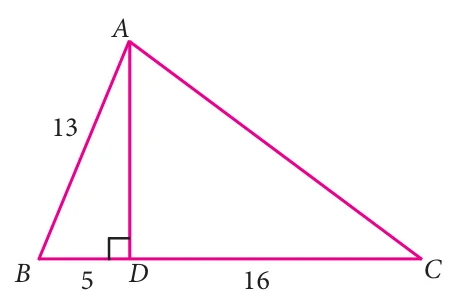
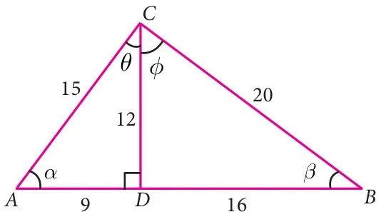
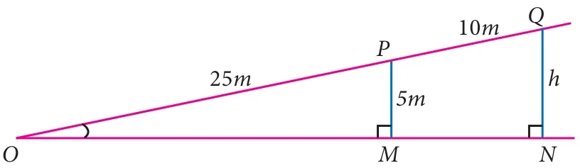

- From the given figure, find all the trigonometric ratios of angle \(B\).

- From the given figure, find the values of

- \(\sin B\)
- \(\sec B\)
- \(\cot B\)
- \(\cos C\)
- \(\tan C\)
- \(\text{cosec}\, C\)
- If \(2\cos\theta = \sqrt{3}\), then find all the trigonometric ratios of angle \(\theta\).
- If \(\cos A = \frac{3}{5}\), then find the value of \(\frac{\sin A - \cos A}{2\tan A}\).
- If \(\cos A = \frac{2x}{1 + x^{2}}\), then find the values of \(\sin A\) and \(\tan A\) in terms of \(x\).
- If \(\sin\theta = \frac{a}{\sqrt{a^{2} + b^{2}}}\), then show that \(b\sin\theta = a\cos\theta\).
- If \(3\cot A = 2\), then find the value of \(\frac{4\sin A - 3\cos A}{2\sin A + 3\cos A}\).
- If \(\cos\theta : \sin\theta = 1 : 2\), then find the value of \(\frac{8\cos\theta - 2\sin\theta}{4\cos\theta + 2\sin\theta}\).
- From the given figure, prove that \(\theta + \phi = 90^{\circ}\). Also prove that there are two other right angled triangles. Find \(\sin\alpha\), \(\cos\beta\) and \(\tan\phi\).

- A boy standing at a point \(O\) finds his kite flying at a point \(P\) with distance \(OP = 25m\). It is at a height of \(5m\) from the ground. When the thread is extended by \(10m\) from \(P\), it reaches a point \(Q\). What will be the height \(QN\) of the kite from the ground? (use trigonometric ratios)
